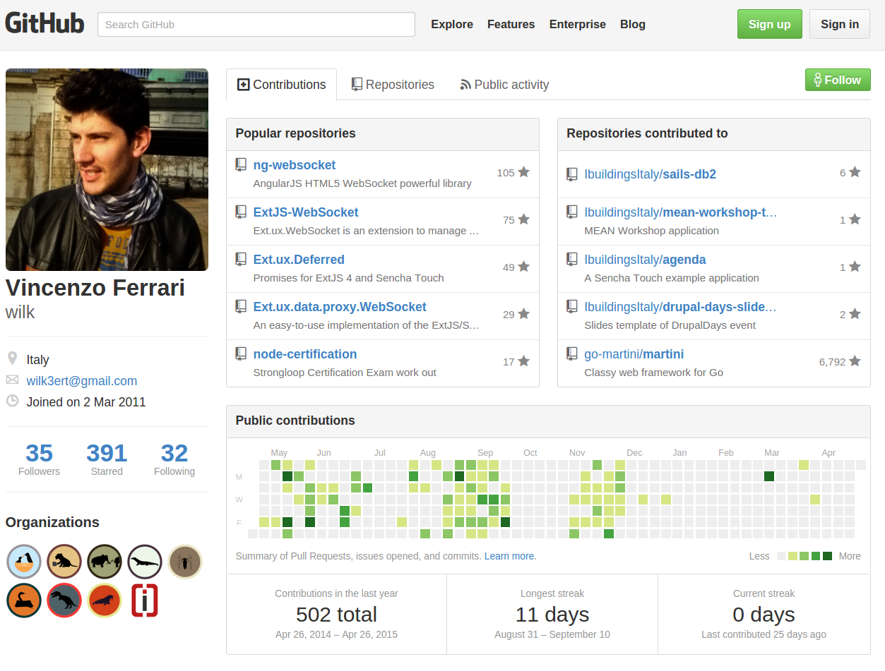
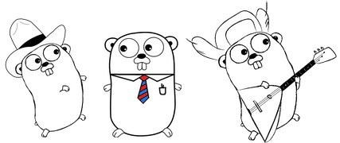
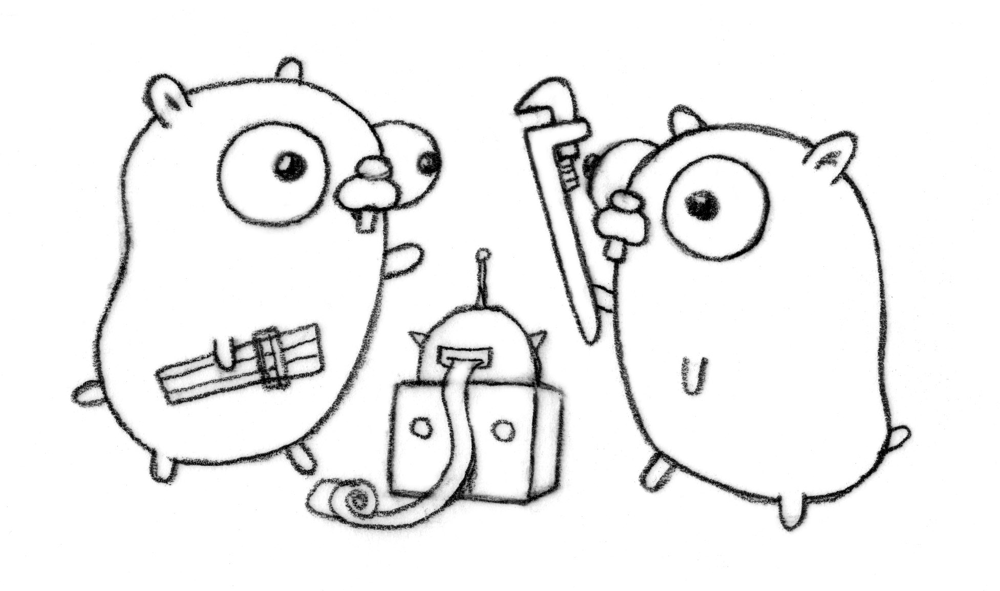
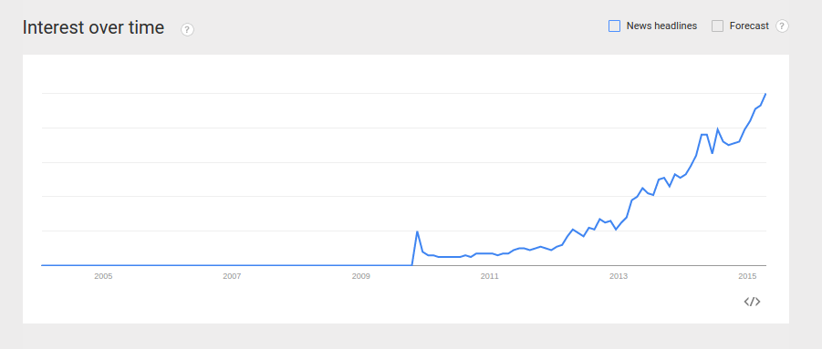

GoLang
Sad no more
Created by Vincenzo Wilk Ferrari / @__wilky__

Sponsors
We wanna thank...
Welcome
Talk Aim
- Introduction to GoLang
- Gather people interested in Go
$ whoami
Vincenzo (Wilk) Ferrari
- Fullstack Web Developer
- Software Engineer at Ibuildings Italia
- Open Source Supporter
Github
Contacts
- Google+: +VincenzoFerrari
- Twitter: @__wilky__
- LinkedIn: Vincenzo Ferrari
- Stackoverflow: wilk
- Coderwall: wilk
GoLang

History
- Created by Google
- Born in 2007
- Became open source late on 2009
- First stable release 2012
- Current version (April 2015): 1.4
Authors
Robert Griesemer
Rob Pike

Ken Thompson
What is it?
- open source
- compiled
- statically typed
- type safe
- garbage-collected
- efficient
- concurrent
- memory safe
- scalable
- simple
- fun
!Reasons!
Problems
- Concurrency it's still hard
- Hard to scale
- Verbosity
- Language adapted to new standards
- Possibility to switch from high-level programming to low-level
Why?
Go is an attempt to combine the ease of programming of an interpreted, dynamically typed language with the efficiency and safety of a statically typed, compiled language. It also aims to be modern, with support for networked and multicore computing. Finally, it is intended to be fast: it should take at most a few seconds to build a large executable on a single computer.
Go FAQs
Goals
- Fast compiling
- Scaling with ease
- Managing dependencies like a boss
- Built-in features for concurrency
- Linear design instead of hierarchical
- Eliminate slowness
- Maintain large software systems
Features

Dependencies
Dependencies are defined (syntactically) in the language, explicit, clear, computable:
import "github.com/go-martini/martini"
Unused dependencies cause error at compile time.
go get to download and to install dependencies.
Packages
In Go, a package is an interface that exposes a set of features ready to use.
Remote packages can get imported in the same way of local dependencies:
package main
import "fmt"
Syntax
Go has a clean syntax. Not super small, just clean:
- regular
- only 25 keywords
- straightforward to parse (no type-specific context required)
Example
package main
import "fmt"
func hello(message string) {
fmt.Println(message)
}
func main() {
go hello("Hello")
go hello("World")
}
Semantics
- statically typed
- procedural
- compiled
- pointers
- no pointer arithmetic
- concurrency
- interface types
- reflection
Concurrency
It is part of the language, not a library.
Based on three concepts:
- goroutines: lightweight threads
- channels: typed pipes used to communicate and synchronize between goroutines
- select: control structure to coordinate concurrent operations
Concurrency Example
package main
import (
"time"
"fmt"
)
func main() {
c1 := make(chan string)
c2 := make(chan string)
go func() {
time.Sleep(time.Second * 1)
c1 <- "one"
}()
go func() {
time.Sleep(time.Second * 2)
c2 <- "two"
}()
for i := 0; i < 2; i++ {
select {
case msg1 := <-c1:
fmt.Println("received", msg1)
case msg2 := <-c2:
fmt.Println("received", msg2)
}
}
}
Garbage Collection
Go lets you limit allocation by controlling memory layout.
Composition
- Composition over inheritance
- Inheritance breaks encapsulation
- Composition causes boilerplate to proxy all methods
- So, struct embedding (Composition + Proxy of selectors)
- Used to share implementations between different types.
Errors
Multiple function return values inform the design for handling errors. Go has no try-catch control structures for exceptions.
Philosophy: Forces you think about errors—and deal with them—when they arise. Errors are normal. Errors are not exceptional.
Tools
gofmt
Always intended to do automatic code formatting. Runs as a "presubmit" to the code repositories. Simplifies sharing.
$ gofmt main.go
gofix
Fix finds Go programs that use old APIs and rewrites them to use newer ones. After you update to a new Go release, fix helps make the necessary changes to your programs.
$ go tool fix .
godoc
Documentation is a huge part of making software accessible and maintainable. Philosophy: the easier it is for programmers to produce good documentation, the better for everyone. Godoc parses Go source code - including comments - and produces documentation as HTML or plain text. The end result is documentation tightly coupled with the code it documents.
$ godoc fmt
go get
Get downloads and installs the packages named by the import paths, along with their dependencies.
$ go get
go build
Build compiles the packages named by the import paths, along with their dependencies, but it does not install the results.
$ go build
Use cases

Who uses GoLang?
- Youtube
- SoundCloud
- BBC Worldwide
- Medium
- The New York Time
- Iron.io
- Docker
- Mozilla
- Canonical
https://github.com/golang/go/wiki/GoUsers
Motivation

http://www.google.com/trends/explore#q=golang
Numbers
- stackoverflow.com/questions/tagged/go : 9,398 questions tagged
- google.com/#q=golang : 881,000 results
- https://github.com/golang/go : 7,704 stars
- https://github.com/avelino/awesome-go : uncountable libs
- https://code.google.com/p/go-wiki/wiki/Projects : uncountable projects
Libraries
Database Drivers
SQL
- go-pgsql: PostgreSQL client
- go-sql-driver/mysql: MySQL driver
- go-sqlite3: SQLite3 driver
No-SQL
- go-couchbase: Couchbase client
- mgo: MongoDB driver
- redis: Redis client
- gomemcache: Memcache client
ORM
- BeeDB: go ORM,support database/sql interface，pq/mysql/sqlite
- gorm: The fantastic ORM library for Golang, aims to be developer friendly.
- hood: Database agnostic ORM for Go
Authentication
- Go-AWS-Auth: AWS (Amazon Web Services) request signing library.
- go.auth: Authentication API for Go web applications
- jwt-go: Golang implementation of JSON Web Tokens (JWT).
- oauth2: OAuth 2.0 package that comes with JWT, Google APIs, Compute Engine and App Engine support.
Template Engines
- ace: Ace is an HTML template engine for Go, inspired by Slim and Jade.
- amber: Amber is an elegant templating engine for Go Programming Language It is inspired from HAML and Jade.
- mustache: A Go implementation of the Mustache template language.
Testing
- testify: A sacred extension to the standard go testing package.
- goblin: Mocha like testing framework fo Go
- assert: Asserts to Go testing
Frameworks
Gorilla
Gorilla is a web toolkit for the Go programming language.
Features:
- schema: fills a struct with form values.
- context: stores values shared during a request lifetime.
- handlers: a collection of handlers for use with Go's net/http package.
- sessions: provides cookie and filesystem sessions and infrastructure for custom session backends.
- websocket: implements the WebSocket protocol defined in RFC 6455.
Martini
Martini is a powerful package for quickly writing modular web applications/services in Golang.
Features:
- Extremely simple to use.
- Awesome path matching and routing.
- Lots of good handlers/middlewares to use.
- Fully compatible with the http.HandlerFunc interface.
- Default document serving
Beego
beego is an open-source, high-performance web framework for the Go programming language.
Features:
- RESTful support
- MVC architecture
- Modularity
- Auto API documents
- Annotation router
- Namespace
- Powerful development tools
- Full stack for Web & API
Revel
A high productivity, full-stack web framework for the Go language.
Features:
- Code reloading
- Compile and run-time error helpful description
- Routing - Parameters parsing - validation
- Sessions
- Templating and caching
- Job running
- Testing
- i18n
Projects

Docker
Docker is an open platform for developers and sysadmins to build, ship, and run distributed applications. Consisting of Docker Engine, a portable, lightweight runtime and packaging tool, and Docker Hub, a cloud service for sharing applications and automating workflows, Docker enables apps to be quickly assembled from components and eliminates the friction between development, QA, and production environments. As a result, IT can ship faster and run the same app, unchanged, on laptops, data center VMs, and any cloud.
etcd
A highly-available key value store for shared configuration and service discovery.
It's:
- Simple: curl'able user facing API (HTTP+JSON)
- Secure: optional SSL client cert authentication
- Fast: benchmarked 1000s of writes/s per instance
- Reliable: properly distributed using Raft (algorithm to manage a highly-available replicated log)
confd
Manage local application configuration files using templates and data from etcd or consul.
It focuses on:
- keeping local configuration files up-to-date using data stored in etcd, consul, or env vars and processing template resources.
- reloading applications to pick up new config file changes
CoreOS
CoreOS is an open source lightweight operating system based on the Linux kernel and designed for providing infrastructure to clustered deployments, while focusing on automation, ease of applications deployment, security, reliability and scalability. As an operating system, CoreOS provides only the minimal functionality required for deploying applications inside software containers, together with built-in mechanisms for service discovery and configuration sharing.
Conclusion

GoLang is/has:
- flexible, fun, readable
- fast (for computers & humans)
- clear dependencies
- clear syntax
- clear semantics
- composition not inheritance
- simplicity of model (GC, concurrency)
- easy tooling (the go tool, gofmt, godoc, gofix)
Thank you!

Credits
- https://github.com/golang/go/wiki/GoUsers
- https://github.com/avelino/awesome-go
- https://code.google.com/p/go-wiki/wiki/Projects
- http://talks.golang.org/